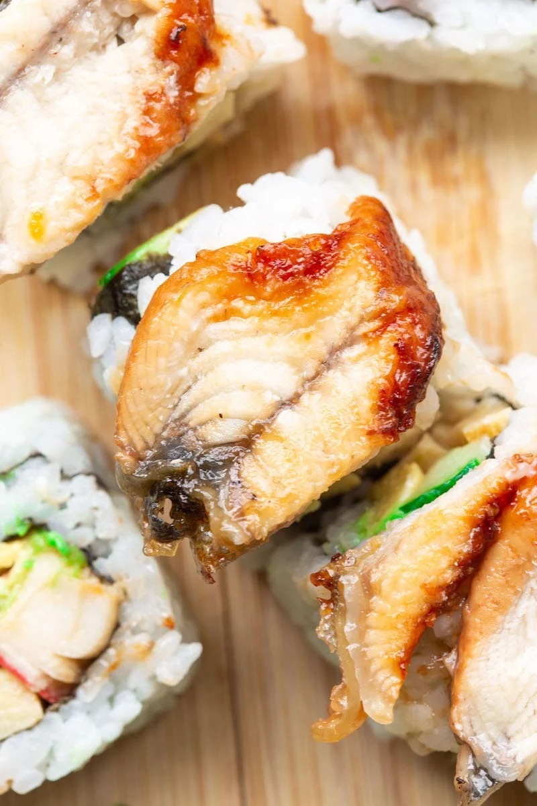
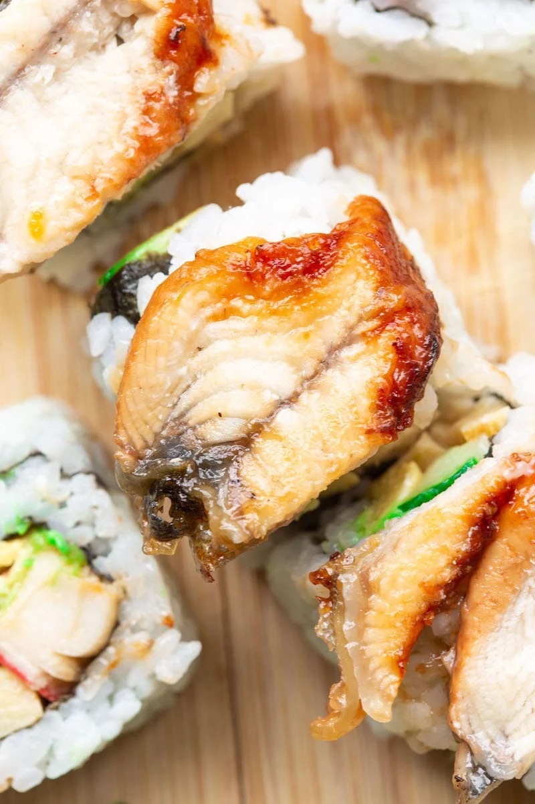
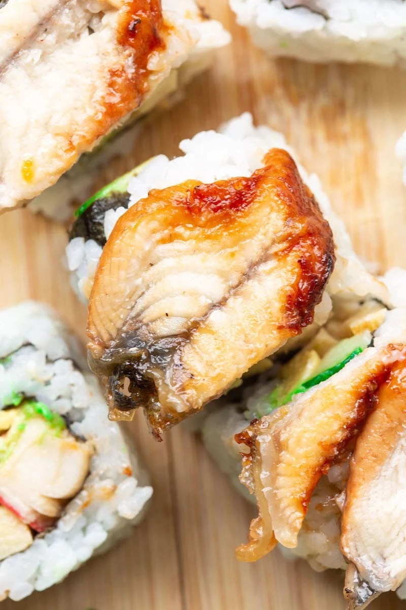
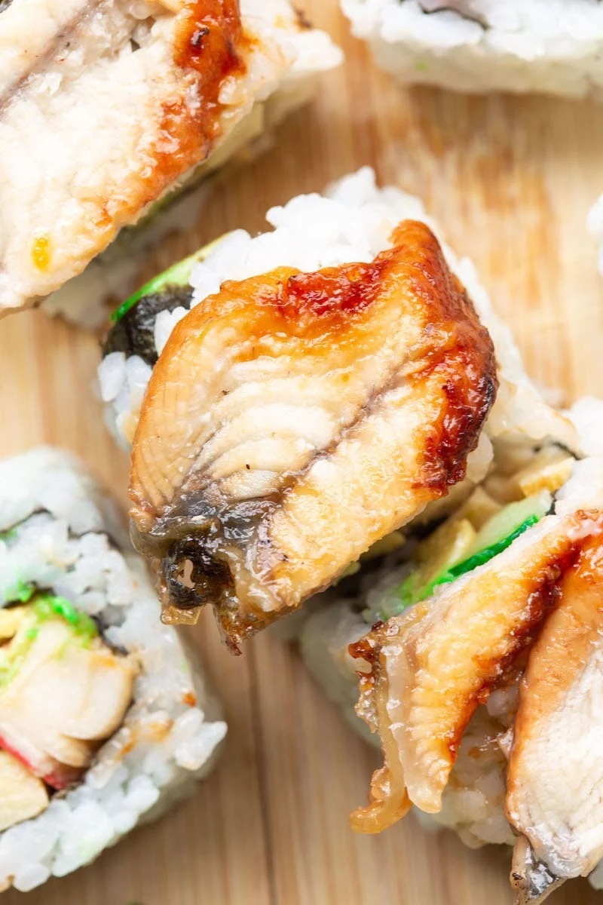
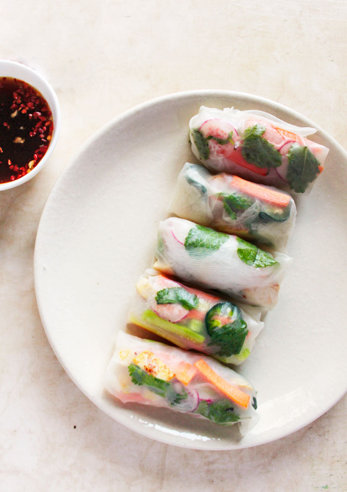
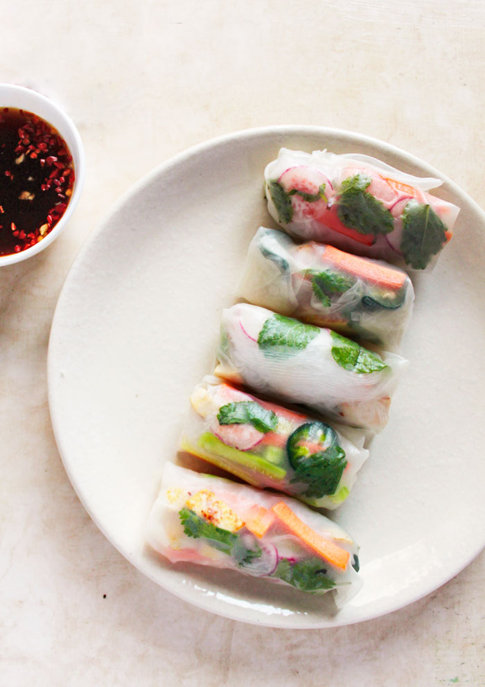

Miso Soup – Traditional miso broth with tofu, seaweed, and scallions
Edamame – Steamed soybeans with sea salt
Vietnamese Summer Rolls – Shrimp, vermicelli, lettuce, and herbs wrapped in rice paper, served with peanut hoisin dipping sauce
Spicy Tuna Tartare – Diced spicy tuna, avocado, cucumber, and crispy wontons
Thai Chicken Satay – Grilled marinated chicken skewers served with peanut dipping sauce
Sushi Lunch Set – 5 pieces of nigiri (chef's choice) and a California roll, served with miso soup
Teriyaki Salmon Bowl – Grilled salmon fillet with teriyaki glaze, served with steamed rice and sautéed vegetables
Poke Bowl – Marinated tuna or salmon, seaweed, avocado, and edamame over sushi rice, topped with sesame and soy sauce
Pad Thai Lunch Bowl – Stir-fried rice noodles with tofu, egg, peanuts, bean sprouts, and tamarind sauce (choice of shrimp, chicken, or tofu)
Vietnamese Vermicelli Bowl – Grilled lemongrass chicken or beef, vermicelli noodles, fresh herbs, lettuce, and crushed peanuts with nuoc cham dressing
Spicy Tuna Roll – Tuna, spicy mayo, and cucumber
California Roll – Crab stick, avocado, and cucumber
Dragon Roll – Eel, avocado, cucumber, and eel sauce
Rainbow Roll – California roll topped with assorted sashimi
Tempura Shrimp Roll – Crispy tempura shrimp, avocado, and spicy mayo


Tuna Tataki – Lightly seared tuna, served with ponzu sauce and garnished with daikon and scallions
Thai Fish Cakes – Deep-fried fish patties with a side of cucumber relish
Vietnamese Grilled Pork Skewers – Marinated pork skewers, served with pickled vegetables and dipping sauce
Crab Rangoon – Crispy wontons stuffed with crab and cream cheese, served with sweet chili sauce
Shiso Tempura Shrimp – Crispy tempura shrimp wrapped in shiso leaves, served with soy dipping sauce
Seaweed Salad – Fresh seaweed with sesame dressing
Papaya Salad (Som Tam) – Shredded green papaya with lime, peanuts, dried shrimp, and chili
House Salad – Mixed greens, cucumber, carrot, and daikon, with a sesame-ginger dressing
Grilled Thai Beef Salad (Yum Neua) – Grilled beef slices with fresh herbs, mixed greens, and lime dressing
Chef's Choice Sushi Platter – Selection of the freshest nigiri (10 pieces) and a tuna roll
Sashimi Platter – 12 pieces of assorted sashimi, served with wasabi and soy sauce
Ezo Signature Roll – Spicy tuna, avocado, cucumber, topped with seared salmon and miso glaze
Tropical Roll – Shrimp tempura, avocado, topped with mango, and drizzled with a pineapple chili sauce
Crispy Volcano Roll – Spicy crab mix and avocado, deep-fried and topped with eel sauce and spicy mayo
Shiso Garden Roll – Cucumber, avocado, pickled radish, and shiso leaf wrapped in soy paper (vegetarian)
Grilled Miso Black Cod – Marinated black cod fillet grilled to perfection, served with steamed rice and sautéed bok choy
Pho with Wagyu Beef – Traditional Vietnamese pho broth with thin slices of wagyu beef, rice noodles, fresh herbs, and lime
Thai Green Curry – Creamy coconut curry with chicken, bamboo shoots, bell peppers, and Thai basil, served with jasmine rice
Tempura Udon – Thick udon noodles in a light dashi broth, served with shrimp tempura and scallions
Crispy Peking Duck – Slow-roasted duck, served with pancakes, hoisin sauce, and scallions
Mochi Ice Cream – Chewy rice cakes filled with mango, green tea, or strawberry ice cream
Coconut Sticky Rice with Mango – Sweet sticky rice served with ripe mango and coconut sauce drizzle
Matcha Cheesecake – Creamy green tea cheesecake with a crispy cookie crust
Lychee Sorbet – Light and refreshing lychee sorbet with fresh mint


Asahi – Sapporo – Singha – Tsingtao
Lychee Martini – Vodka, lychee puree, and a splash of lime juice
Pandan Gin Fizz – Pandan-infused gin, lime, soda, and egg white for a frothy finish
Pineapple Shiso Smash – Fresh pineapple, muddled shiso leaves, rum, and a hint of ginger syrup
Tokyo Mule – Vodka, ginger beer, lime, and yuzu
Hakkaisan Junmai (Niigata) – Crisp and dry with subtle notes of rice and a clean finish
Shichida Junmai (Saga) – Full-bodied with rich umami flavor and mild acidity
Kikusui Junmai (Niigata) – Light and refreshing with subtle notes of melon and citrus
Dassai 50 Junmai Ginjo (Yamaguchi) – Delicate and fragrant with hints of tropical fruit and peach
Suigei Tokubetsu Junmai Ginjo (Kochi) – Dry and clean, with bright acidity and a hint of grapefruit
Tedorigawa Junmai Ginjo "Lady Luck" (Ishikawa) – Bright and refreshing with aromas of white flowers and green apples
Kubota Manju Daiginjo (Niigata) – Elegant and silky with floral aromas and refined sweetness
Katsuyama Ken Daiginjo (Miyagi) – Rich and velvety with fruity notes of ripe pear and melon
Tatsuriki "Chotokusen" Daiginjo (Hyogo) – Luxurious and complex with subtle notes of lychee and pear
Hakutsuru Sayuri Nigori (Hyogo) – Creamy and sweet with notes of coconut and vanilla
Shiro Sasa Nigori (Akita) – Thick and rich with bold sweetness and a hint of banana
Dassai Sparkling 50 (Yamaguchi) – Effervescent and refreshing with crisp finish and fruity notes
Mio Sparkling Sake (Hyogo) – Lightly sparkling with sweet and fruity profile
Eikun "The Sleeping Beauty" Junmai Daiginjo (Kyoto) – Delicate floral aroma and soft, silky texture
Isojiman Tokubetsu Junmai (Shizuoka) – Fresh and crisp with mineral-driven finish
 
